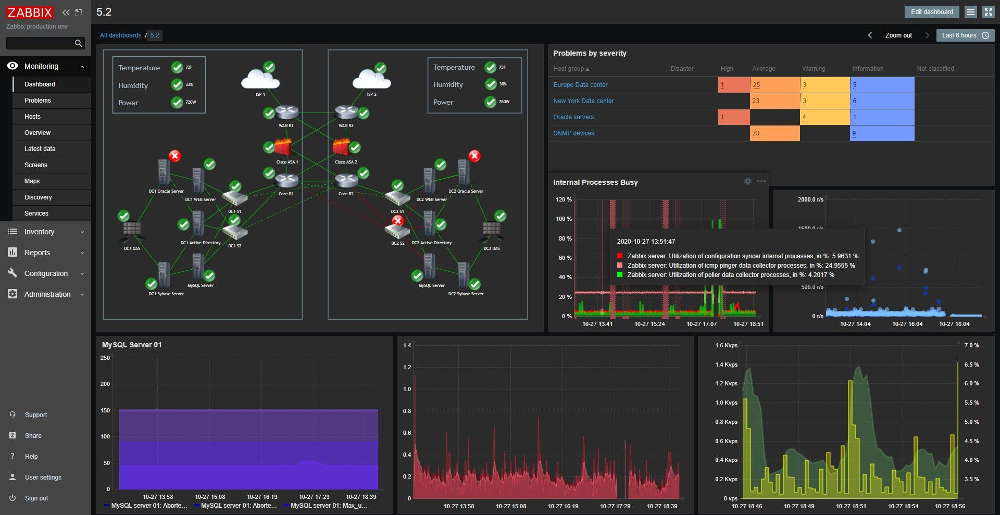
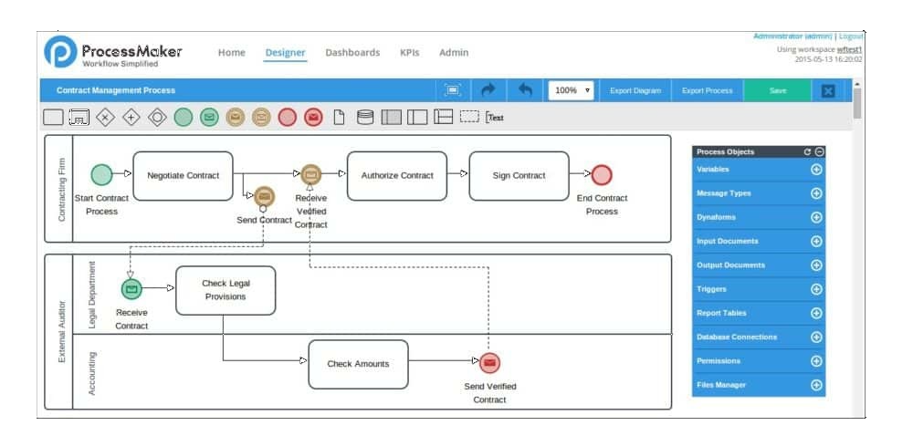
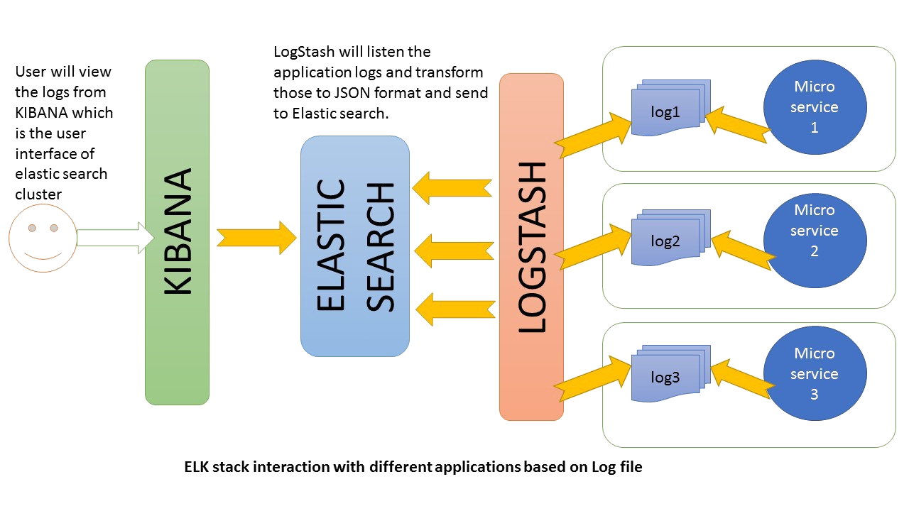

Transition 4.0
La quatrième révolution industrielle, 4RI ou industrie 4.0, conceptualise l'évolution rapide de la technologie, des industries et des modèles et processus sociétaux au XXIe siècle en raison de l'interconnexion croissante et de l'automatisation intelligente.
COMMUNICATION GESTION DE PROJET AUTONOMIE PHP SQLLe projet
Ce projet débuté en avril 2019 lors de mon entrée à BMS CIRCUITS , filière groupe ALL CIRCUITS , s’inscrit dans la mise en place de l’usine moderne, l’industrie 4.0, que l’on souhaite mettre en place.
Le concept de l’industrie 4.0 consiste à automatiser l’ensemble des lignes de productions d’une usine, avec des technologies Big Data et machine learning, dans le but de faire communiquer les machines entre elles, en les incitants à appliquer des actions préventives pour éviter des dysfonctionnements.
Contexte
BMS CIRCUITS, filière du groupe ALL CIRCUITS, l’un des leaders mondiaux de l’EMS (fabricant de composants électroniques), souhaite moderniser ces lignes de productions avec la mise en place de moyens technologiques de haut niveau, tels que l’IOT (Internet des objets), la Big Data ou encore des architectures hyper-convergence dans ses structures et services informatiques.
Cependant, nous disposions d’une architecture réseaux et des applications vieillissantes, voire obsolètes dans certains cas et incapable de répondre à ce besoin, nous faisions donc face à des difficultés considérables quant à la mise en de la future usine moderne.
Fort de mes précédents stages et de ma formation à IN’TECH SUD, j’ai pu de suite proposer mes services quant aux différents problèmes cités ci-dessus.
Le risque pour l’entreprise résidait encore dans le blocage total de cette partie, et l’incapacité à migrer sereinement vers l’industrie 4.0. Ce qui impliquait donc de faire appel à une ressource externe pour la gestion du problème, naturellement, un coût supplémentaire et non-négligeable dans le budget de l’entreprise.
En ce qui me concerne, à ce moment-là, je commençais ma spécialisation en BI (Business Intelligence), et Big Data; le risque était donc de me voir sortir de ma mission initiale au profit celle-ci.
Après études, mon responsable n’a pas hésité à me lancer en toute autonomie sur le sujet, car le besoin était bien plus important sur le moment que les développements BI au vu de l’enjeu.
Objectifs
Il m’a été défini les objectifs suivants :
- Migrer notre logiciel de surveillance (Zabbix) vers une version plus récente ;
- Surveiller l’ensemble du parc informatique (ordinateurs, réseaux, switchs, machine de productions…etc.) ;
- Envoyer des alertes automatiques aux administrateurs système pour chaque défaillance signalée ;
- Migrer les applications legacy (vielles);
- Mettre en place un système de consultation de logs (journaux d'événements) pour une recherche rapide des causes de blocages système ;
- Participer à la mise en place de l’architecture de l’hyper-convergence.
Ma contribution
Sur l’ensemble des objectifs réalisés, je travaillais en collaboration avec tous les services de l’informatique, particulièrement le service système et réseaux.
Résultats
Avant le début des objectifs, nous nous sommes réunis pour décider de nouveaux systèmes (distribution Linux) à utiliser et du nouveau paramétrage réseaux.
#MIGRATION ZABBIX
Zabbix est une application de surveillance multi-plateforme et accessible depuis Internet. Celui-ci représentait un gros module avec la centaine de machines comportant des systèmes variés les unes les autres.
Pour y parvenir, j’ai développé au sein de Zabbix un système de déploiement automatique, avec reconnaissance du système d’exploitation indiqué.

Le résultat a très vite été vu, en effet, entre les ordinateurs qui étaient dans un état critique (espace disque, surcharge processus…etc.), ou le matériel que nous n’avions pas dans notre schéma réseau; nous sommes réunis pour refaire la cartographie complète de l’entreprise et régler les différents problèmes constatés.
Aujourd’hui, grâce a ces actions les administrateurs BMS peuvent suivre en direct et anticiper les problèmes de pannes et de manque de ressources.
#MIGRATION APPLICATION LEGACY - PROCESSMAKER
ProcessMaker est l’application de gestion des workflows (flux opérationnel) de l’entreprise, l’application est donc utilisée par tous les services de l’entreprise (+300 personnes), l’une des plus importantes à ce jour.

Sa migration fut beaucoup plus technique que Zabbix, en effet celle-ci demandait des compétences :
- PHP
- ProcessMaker Native
- Système Linux
- Gestions de workflows
- Base de données MySQL/MariaDB
Pour y parvenir, il fallait allier système et réseaux + développement, en effet, il fallait combiner la gestion des ressources et le développement des anciennes fonctions pour qu’elles soient compatibles avec la nouvelle version. Le challenge était d’un grand niveau.
Après de nombreuses semaines de bataille, la nouvelle version de l’application était à jour et toute l’usine pouvait en profiter des nouvelles fonctionnalités apportées par celle-ci.
#GESTION DE LOGS - ELK
Les outils ELK (ElasticSearch Logstash et Kibana) sont une combinaison de trois applications open source conçue pour l’analyse et le traitement de données du système.

- Elasticsearch fournit des fonctions de recherches avancées en + de l’analyse ;
- Logstash pour l’extraction des données ;
- Et enfin, Kibana pour la visualisation des données et graphique.
Le choix et la mise en place de ces outils ont entièrement été faits par moi après une étude.
Tout comme pour Zabbix , en plus des graphiques fournis pour l’ensemble des systèmes analysés, nous pouvions rapidement trouver la cause d’un problème.
En résumé, nos systèmes de surveillance étaient complets, Zabbix pour nous indiquer l'état des machines et autres ressources réseaux, les outils ELK pour nous dire comment les incidents se sont produits.
De plus, venait se rajouter l’homogénéisation de nos systèmes pour une gestion plus fine et responsable.
Conclusion
Le chantier était immense. Avec le recul, nous avions franchi les étapes nécessaires quant à la mise en place de l’hyper-convergence, si bien qu’elle a été avancée au vu de sa date initiale.
L’hyper-convergence étant l’assurance d’avoir une architecture robuste et de qualité, l’entreprise était prête quant à la mise en place de l’usine 4.0.
Pour ma part, l’utilisation de l’ensemble de ces technologies a mené à voir en avance des notions de mon programme scolaire, ce qui a eu pour conséquence une bonne préparation a des titres comme la certification CCNA Cybersecurity Operations .
Avec le recul, je suis fier d’avoir contribué à la mise en place des différents systèmes et la satisfaction reste indescriptible. Savoir sortir de sa zone de confort et se réinventer est l’une des qualités menant au succès, cela est vrai en informatique, mais aussi dans tout domaine.